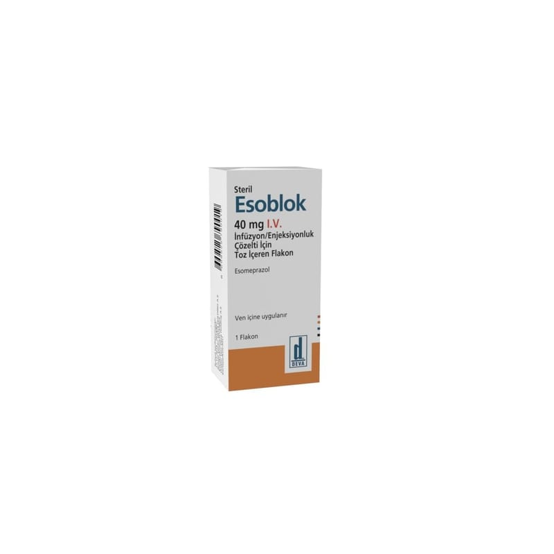

Esoblok 40 mg I.V. İnfüzyon/Enjeksiyonluk Çözelti İçin Toz İçeren Flakon ,6 ml, Flakon, 1 Adet

Ne için kullanılır
KT · Bölüm 1ESOBLOK “proton pompası inhibitörü” olarak bilinen ilaçlardan biridir. Midenizdeki asit olu şumunu azaltır.
ESOBLOK 40 mg İ.V. İnfüzyon/Enjeksiyonluk Çözelti İçin Toz İçeren Flakon’un bir dozu mevcuttur: 40 mg
Her doz 40 mg esomeprazol toz içerecek şekilde flakonlarda yer alır.
ESOBLOK aşağıdaki durumların tedavisinde kullanılır: • Mide suyunun yemek borusuna kaçışına bağlı yemek borusunda iltihaplanma ve ağrı (Eroziv reflü özofajit’in tedavisinde) • Yetişkinler, adolesanlar ve çocuklarda, mide suyunun yemek borusuna kaçışına bağlı mide yanması ve kusma gibi hastalık belirtilerinde (Gastro-özofajiyal reflü hastalığının semptomatik tedavisinde) • Ülserler: Yetişkinlerde ağrı ve iltihaplanma için kullanılan ilaçların neden olduğu ülserlerin iyileştirilmesi ve önlenmesinde (gastrik ülserlerin iyileştirilmesi ile NSAİİ (non-steroidal anti-inflamatuvar ilaç) tedavisine bağlı gastrik ve duodenal ülserlerin önlenmesi) • Akut kanamalı gastrik veya duodenal ülserli yetişkin hastalarda terapötik endoskopi sonrası, kanamanın kısa süreli durdurulmasında ve tekrar kanamanın önlenmesinde.